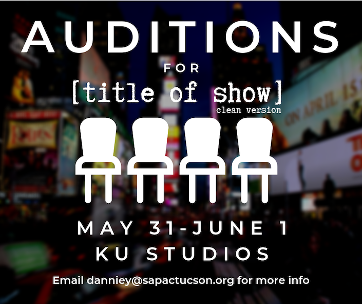

<template>
    <section class="about py-5 p-3 px-md-5" style="height:100%;">

      <div class="card">

        
        <div class="card-body">
          <h2 class="card-title">Auditions</h2>

          <p>
            Auditions for SAPAC's production of [title of show] (clean version) will be held at KU Studios (6066 N
            Oracle Rd) on <strong>Friday, May 31st 6p-9p</strong> and <strong>Saturday, June 1st 10a-12p</strong>. You
            will need to prepare 16-32 bars of a comedic song and a one-minute comedic monologue. An accompanist will be
            provided. Please bring a resume (and headshot if available) to auditions. You will be notified shortly after
            the audition whether we will be needing to see you at callbacks.
            <p><strong>Callbacks</strong> will be held Saturday, June 1st, from 1p-5p and will include singing music
              from the show and cold readings.</p>

          </p>
          <p>
            The rehearsal schedule will be as follows:
            <ul>
              <li>July 8th- September 7th - 6p-9p on two evenings during the week (TBD), 9a-1p on Saturdays</li>
              <li>September 9th-12th - Technical rehearsals M-Th from 5p-10p</li>
              <li>September 13th-22nd - Performances on September 13th (7:30), 14th (7:30), 15th (2:00), 20th (7:30),
                21st (7:30), and 22nd (2:00) with a possible brush-up/run-through scheduled for Thursday, September
                19th. </li>
            </ul>

          </p>
          <p>
            To sign up for a spot, please <strong><a href="https://forms.gle/fEkKHXVCppAFzeMv9" target="_blank">fill out
                the form found here</a></strong>. If you have any questions, please email danniey@sapactucson.org.

          </p>
        </div>
      </div>

    </section>
</template>


